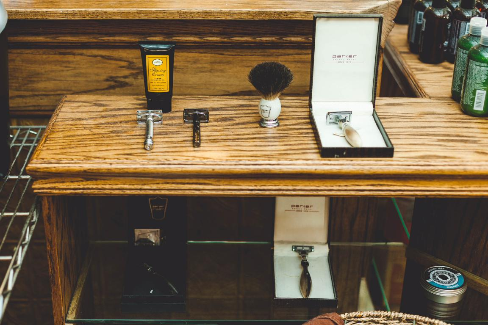

We believe that going to the barber shop should be more than an errand. It should be an experience. It's important to us that you get a great haircut, receive remarkable service and build lasting relationships in a comfortable space. We offer more than a typical barbershop. Boardroom combines a relaxing, sophisticated environment and a friendly, professional team to deliver the ultimate grooming experience. We are committed to being an inclusive and welcoming environment for every client and member of our team who enter our space. We celebrate the diversity within our community and aim to be an example of unity in The King's Barber Shop. Our store is one to impress everyone who comes to it for the first time. We guarantee exceptional client service to every client, on every visit. With a welcoming atmosphere, we thrive to become the most trusted hair salon destination in Trelew.
